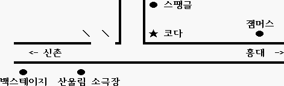

일시: 1999년 5월22일 토요일 오후 2시30분 - 5시30분
장소: 홍대앞 "코다" (T. 325-1753)
주제: Flower Kings 특집 - 도태영
Neo-prog를 알고싶다 - 안병욱
회비: 5천원 (2차+5천원)
코다를 한번도 가보질 않아서 걱정되는데요. Freebird는 그날 4시부터 예약이
되있고, 배추가게는 밴드 연습을 해야 한다고 해서 새로운 곳을 마련했습니다.
한번도 가보질 않아서 어떨른지는 잘 모르겠지만요.
홍대에서 신촌쪽으로 가시면 찾을 수 있겠네요. 신촌에서 찾아오실려면,
신촌지하철역에서 홍대쪽으로 쭈욱 가시다가 왼쪽으로 조그만 2차선 도로가
나있어요. 거기로 들가시면 홍대, 극동방송국 가는 길이고 이정표도 있거든요.
거기에 들어서면 바로 오른쪽에 라이브 공연과 비디오 보면서
헤드뱅잉하는 곳으로 유명한 백스테이지가 보입니다. 찾으실 수 있겠죠?
감상회에 많은 분들이 참여하시지 않을지도 모르니까 너무 많은 기대는 하지마세요.
지금까지 최저 다섯분, 최고 스물 세분이 기록이었던 것 같습니다. 다섯분은
아마 오르크망님이 RIO 특집할때였던 것 같아요. 스물세분은 Fish님의
폴랜드 특집이었죠.